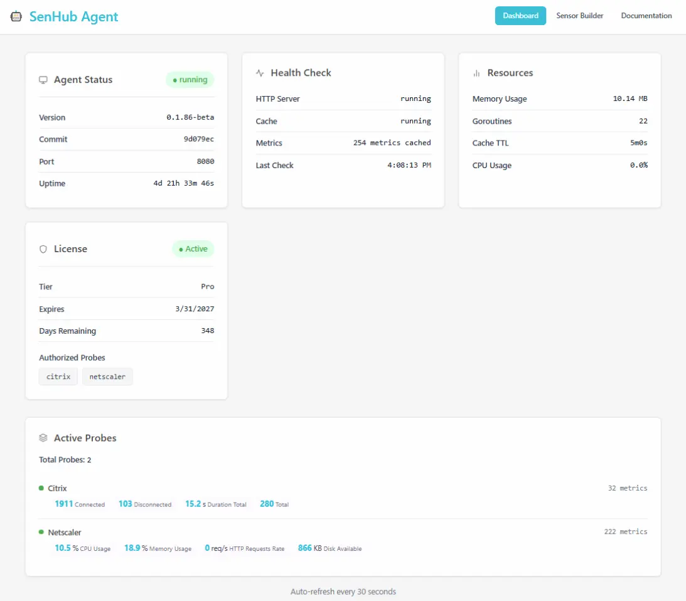
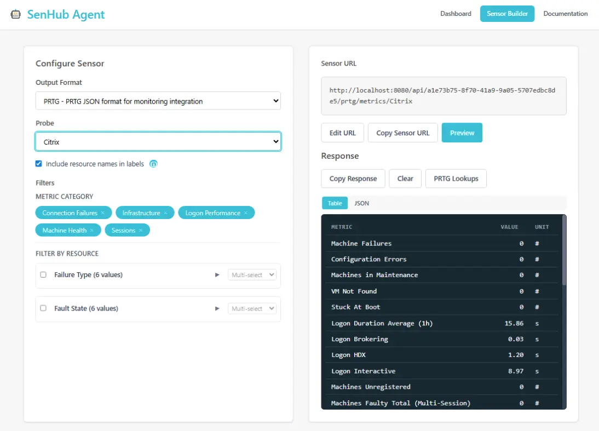
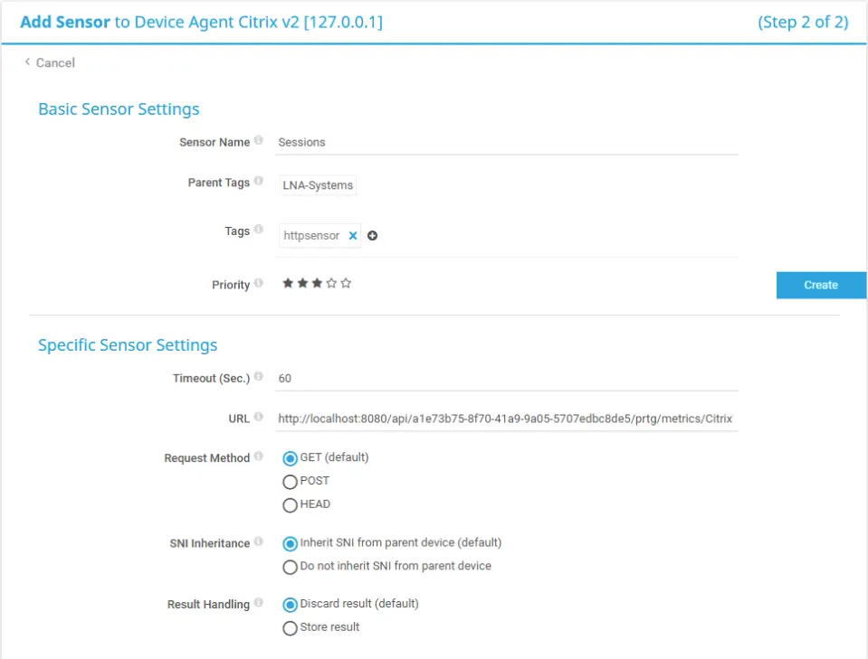

Web Interface¶
SenHub Agent includes a built-in web dashboard for monitoring agent status, exploring the API, and configuring your monitoring system integration.
Accessing the Dashboard¶
Open a browser and navigate to:
Replace agent-server with the hostname or IP address of the machine running the agent, and {authentication-key} with your agent's UUID key.
If HTTPS is enabled, use https:// and the HTTPS port (default 8443):
The web interface requires the web endpoint to be enabled in the storage configuration:
Available Sections¶
Dashboard¶
The main dashboard displays:
- Agent status and version
- List of configured probes and their collection status
- Number of cached metrics per probe
- Memory and CPU usage
- Agent uptime
This page gives you a quick overview of the agent's health and activity.

OTLP Pipeline card¶
When the agent is configured with the OTLP push strategy, the dashboard renders a dedicated OTLP Pipeline card next to the probe list with four sub-sections:
- Pipeline — total metrics / logs pushed since boot, export errors, dropped data-points broken down by reason (
probe_cardinality,store_cap,memory_soft_limit,memory_hard_limit). - Store & Export — current in-memory store size, log buffer fill ratio, last and mean export duration.
- Checkpoint — when persistence is enabled: file size, time since the last save, entries restored at boot, errors by stage.
- Parallel export — number of sub-batches the last push fanned out across.
The card is hidden when the agent has no OTLP strategy, so older deployments render unchanged. Values refresh on the dashboard's 30-second cycle.
For an operator-level reference of every field exposed by this card, see OTLP observability in the admin guide.
Sensor Builder¶
The Sensor Builder provides an interactive interface to:
- Browse all available API endpoints and their HTTP methods
- Test API calls directly from the browser with live responses
- View the raw JSON output from each endpoint
- Discover available probes and their metrics
This is especially useful when setting up PRTG, Nagios, or other monitoring tool integrations. You can see exactly what data is available and how it is formatted before configuring your monitoring system.

Documentation¶
The Docs section provides embedded reference documentation accessible directly from the agent, without needing an internet connection. This is useful in air-gapped environments.
Monitoring System Integration¶
PRTG Network Monitor¶
Sensor Type¶
Use the HTTP Data Advanced sensor type in PRTG. This sensor sends an HTTP request to the agent and parses the JSON response.
Creating a PRTG Sensor¶
For each probe you want to monitor in PRTG:
- In PRTG, right-click a device and select Add Sensor
- Search for HTTP Data Advanced and select it
- Configure the sensor:
- URL:
http://agent-server:8080/api/{key}/prtg/metrics/{probe-name} - Request Method: GET
- Content Type: Leave default

The agent returns metrics in the PRTG JSON format:
{
"prtg": {
"result": [
{
"channel": "CPU Usage",
"value": 45.2,
"float": 1,
"unit": "Percent"
},
{
"channel": "Memory Available",
"value": 8192,
"float": 1,
"unit": "BytesMemory"
}
]
}
}
Each channel becomes a separate metric in PRTG with its own graph and alerting thresholds.
Finding Available Probe Names¶
To see which probe names are available for PRTG sensors:
Or navigate to the Sensor Builder in the web dashboard.
Filtering Metrics by Tags¶
Some probes (Citrix, NetScaler) return metrics for multiple components. You can filter by tags:
This returns only the metrics for the virtual server named vs_web.
Installing PRTG Value Lookups¶
SenHub Agent provides custom PRTG Lookup files that translate numeric status values into meaningful text (e.g., displaying "Up" instead of "1", "Down" instead of "0"):
-
Download the lookups from the agent API:
Or navigate to the Sensor Builder in the web dashboard and click the download button. -
Extract the ZIP file to the PRTG custom lookups directory on your PRTG server:
-
In the PRTG web interface, go to Administration > Administrative Tools and click Load Lookups and File Lists
After loading the lookups, PRTG sensors will display human-readable status values instead of raw numbers.
The ZIP file contains lookup files in the PRTG .ovl format:
senhub-prtg-lookups.zip
netscaler.lbvserver.state.ovl
netscaler.service.state.ovl
netscaler.ha.node.state.ovl
...
Nagios¶
For Nagios, use the Nagios-formatted endpoints:
The response follows the standard Nagios plugin output format:
This can be used with check_http or a custom check command. Example Nagios command definition:
define command {
command_name check_senhub
command_line /usr/lib/nagios/plugins/check_http -H $HOSTADDRESS$ -p 8080 -u '/api/{key}/nagios/metrics/$ARG1$'
}
To list available checks:
Useful API Queries¶
Check Agent Health¶
Response:
{
"status": "ok",
"version": "0.1.80",
"uptime": "2h30m",
"probes_active": 4,
"metrics_cached": 156
}
List Configured Probes¶
Response:
{
"probes": ["CPU", "Memory", "Citrix Production", "NetScaler LB"],
"probe_metrics": {
"CPU": 4,
"Memory": 3,
"Citrix Production": 85,
"NetScaler LB": 64
},
"total_metrics": 156
}
View System Information¶
Returns version, uptime, memory usage, CPU usage, cache statistics, and service health.
Check License Status¶
Response:
{
"status": "active",
"tier": "pro",
"expires_at": "2026-06-30T23:59:59Z",
"days_remaining": 120,
"authorized_probes": ["cpu", "memory", "citrix", "netscaler", "redfish"],
"free_tier_probes": ["cpu", "memory", "logicaldisk", "network"]
}
View Active Configuration¶
Returns the active probe configuration as read from agent-config.yaml.
Cache Statistics¶
Returns the number of cached metrics, memory usage, and TTL (time-to-live) of the cache.
Clear the Cache¶
If you need to force a fresh collection:
This clears all cached metrics. The next collection cycle will repopulate the cache.